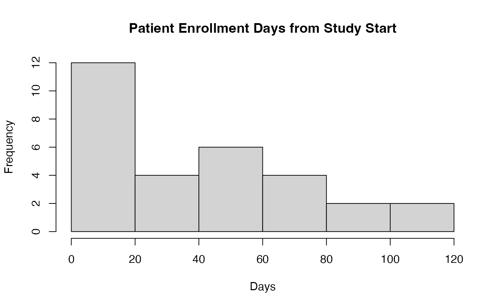

A dataset containing simulated patient timeline data for clinical oncology research, with time variables represented as actual dates. This dataset represents typical patient journeys through cancer treatment, including diagnosis, treatment, response assessment, and outcomes. The data simulates a realistic clinical study where patients enroll over a 6-month period and have varied treatment durations and outcomes.
Format
A data frame with 30 rows and 15 variables:
- PatientID
Patient identifier, formatted as PT001, PT002, etc.
- StartDate
Date. Date at which observation began, varies across patients to represent staggered enrollment
- EndDate
Date. Date at which observation ended
- BestResponse
Factor with levels: CR (Complete Response), PR (Partial Response), SD (Stable Disease), PD (Progressive Disease), NE (Not Evaluable)
- Surgery
Date. Date of surgery, may be before the study enrollment date
- TreatmentStart
Date. Date when treatment began
- ResponseAssessment
Date. Date of response assessment
- Progression
Date. Date of disease progression, NA if no progression
- Death
Date. Date of death, NA if patient alive at last follow-up
- Risk
Factor with levels: High, Medium, Low. Risk classification for the patient
- Age
Numeric. Patient age in years
- ECOG
Integer (0-3). ECOG performance status
- ResponseDuration
Numeric. Duration of response in days, calculated as Progression - ResponseAssessment
- FollowUpDuration
Numeric. Total duration of follow-up in days, from StartDate to EndDate
Examples
data(patientTimelinesDates)
# Show staggered entry of patients into the study
hist(as.numeric(patientTimelinesDates$StartDate - min(patientTimelinesDates$StartDate)),
main = "Patient Enrollment Days from Study Start",
xlab = "Days")

# Basic swimmer plot with date data
swimmerplot(
data = patientTimelinesDates,
patientID = "PatientID",
start = "StartDate",
end = "EndDate",
event = "BestResponse",
timetype = "datetime",
timetypedata = "ymd",
timetypeoutput = "months"
)
#> Error in swimmerplot(data = patientTimelinesDates, patientID = "PatientID", start = "StartDate", end = "EndDate", event = "BestResponse", timetype = "datetime", timetypedata = "ymd", timetypeoutput = "months"): argument "sortVariable" is missing, with no default
# With absolute time display to show the actual enrollment pattern
swimmerplot(
data = patientTimelinesDates,
patientID = "PatientID",
start = "StartDate",
end = "EndDate",
event = "BestResponse",
timetype = "datetime",
timetypedata = "ymd",
timetypeoutput = "months",
startType = "absolute"
)
#> Error in swimmerplot(data = patientTimelinesDates, patientID = "PatientID", start = "StartDate", end = "EndDate", event = "BestResponse", timetype = "datetime", timetypedata = "ymd", timetypeoutput = "months", startType = "absolute"): argument "sortVariable" is missing, with no default